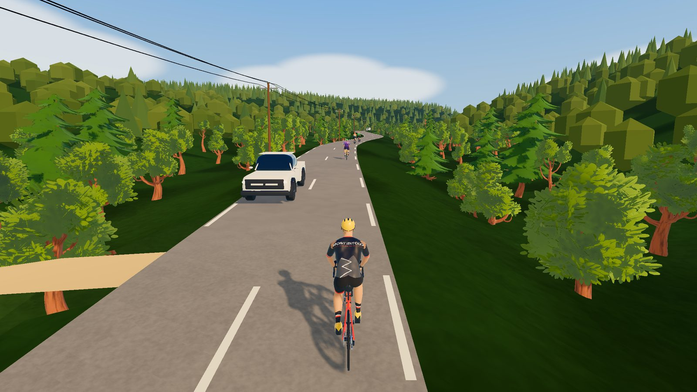
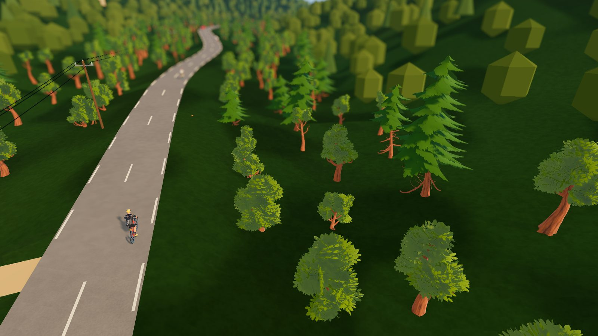
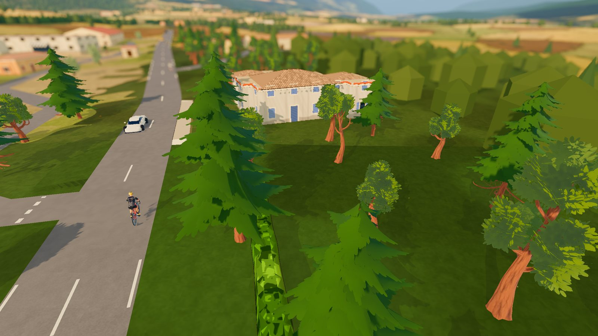
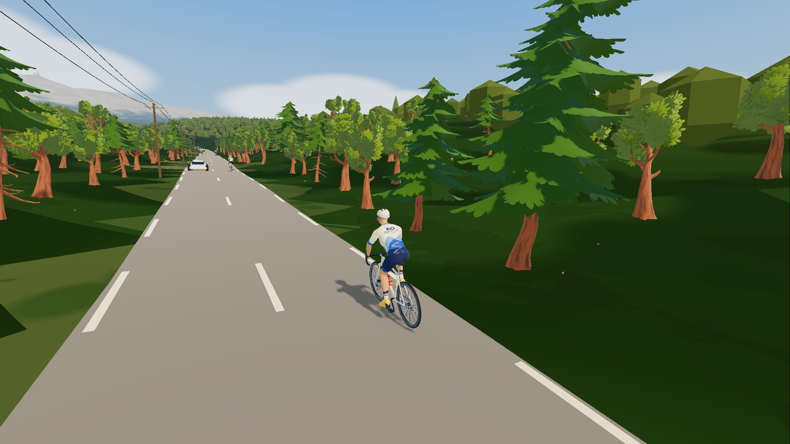
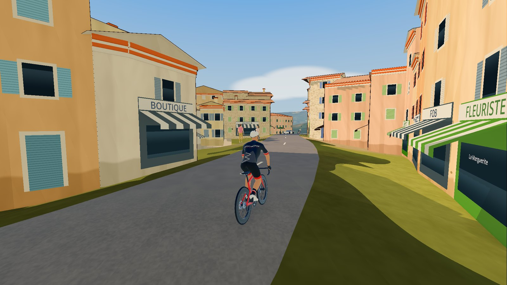
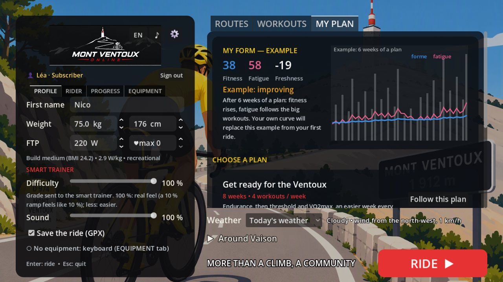
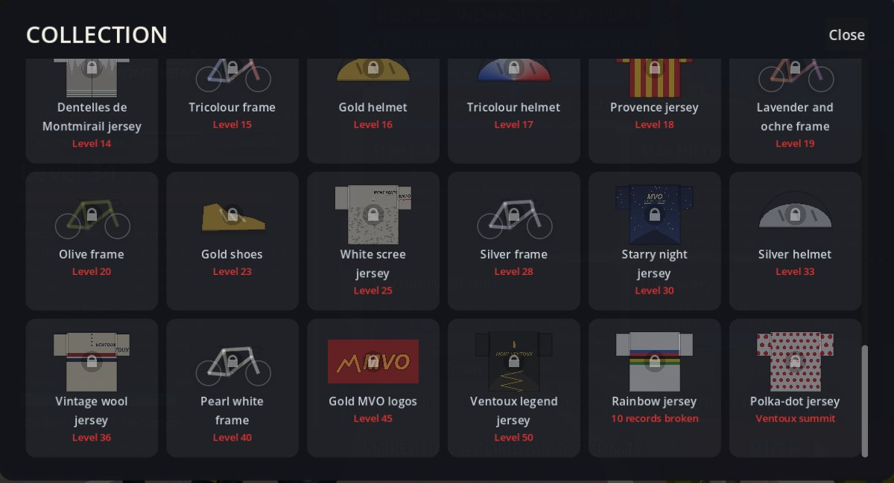

The hairpins of the Bédoin forest, the white scree above Chalet Reynard, the Nesque gorges, Gordes perched on its rock, the villages of the Dentelles: the Vaucluse rebuilt to the metre, for your smart trainer.
Get notified at launch Explore the mapEvery climb is timed from its village up to the observatory, with the white and yellow kilometre markers counting down the altitude and the gradient of the next kilometre, just like on the real road.

The royal road: the relentless forest, then the stone desert up to the summit.

The north face, its 11% ramps and Mont Serein, with the Giant in your sights.

The gentlest, between lavender and forest, up to Chalet Reynard and the last six kilometres.
All three on the same day? The "Triple Giant" badge is yours.
From a one-hour spin on the greenway to a full day around the Giant: real rides, recorded on the ground, and 25 to 40 km sections for a smart-trainer session. Pick a route on the map or in the list to discover it.

Rise above the road: golden late-afternoon light, soft shadows, terrain sculpted in layers, and a miniature blur that turns every high view into a collector's diorama. Come back down behind your wheel: the road stays sharp, to the metre.



 Diorama mode in motion
Diorama mode in motion
In-game footage, exactly as it appears on your screen.
 Riding through Bédoin
Riding through Bédoin
 Bédoin, 10 % in the forest
Bédoin, 10 % in the forest The north face, at 11%
The north face, at 11% The Via Venaissia by MTB
The Via Venaissia by MTBMont Ventoux Online rebuilds Provence from the most accurate public data: IGN terrain (the French national mapping agency), OpenStreetMap buildings and roads, aerial photographs. No invented scenery: the real road.

Your smart trainer receives the gradient of the road at every moment: the Bédoin forest, the ramps above Chalet Reynard, the final straight to the observatory.
Difficulty adapts to your level: a 10 % ramp can feel like 5 %.

Every house stands in its place, at its real height, with its shutters, tiles and shops. Village signs and street names roll by under your wheels.

Holm oaks and pines on the hillsides, the Nesque gorges carved into the cliffs, the vineyards of the Dentelles, Gordes perched on its rock: the landscape is the one you know, right down to the white road markings.
Other riders to follow or overtake (with drafting in their wheel), cars, tractors, flocks of sheep, runners and walkers who step aside as you pass, cicadas in summer.

Live: the game fetches the real Vaucluse weather when you ride. Wind, gusts, temperature, clouds and rain, with a stronger, colder wind at the top of the Ventoux than at its foot.
The wind really counts: a headwind slows you down, a tailwind pushes you, and villages shelter you. Fancy something else? Pick Sunny, Mistral, Overcast or Rain before you set off.

Workouts from 30 minutes to 1 h 30 (sweet spot, threshold, VO2max…) ridden on the route of your choice, in ERG mode. Complete plans, including an 8-week "Get ready for the Ventoux", with your fitness and fatigue day by day.

The Ventoux grows with every hairpin. What awaits you up there, at 1,912 m? That's the surprise.
Every pedal stroke counts: experience is earned through effort, and consistency is rewarded. From Touring cyclist to Ventoux legend, fifty levels to climb.

The Mistral in winter, the Dentelles in bloom in spring, lavender in July, the grape harvest in September: twelve challenges that follow life in the Vaucluse. Complete it before the end of the month to earn 500 experience points and a dated badge in your collection.
The game is being finalised with a group of testers. The prices below are those planned at launch and may still change. Write to us to be notified at launch.
No commitment, cancel at any time.
Mont Ventoux Online is in testing (beta) with a group of cyclists. Launch is planned soon: write to us to be notified as soon as it can be downloaded.
Through the contact form: pick the topic of your message (before buying, technical issue, subscription, idea) and it goes straight to the right person.
Four complete routes to ride with your smart trainer and heart-rate monitor, with no time limit or ride limit, the first five progression levels, badges and the monthly challenge.
€5.99 per month, no commitment: cancel whenever you like, access stays open until the end of the paid month. Your progress is kept. In the free version your experience keeps counting beyond level 5: when you subscribe, you instantly get the level you have really earned.
The game connects to Bluetooth smart trainers that follow the FTMS standard, which is the case for most recent connected models.
Not all the time: routes are installed on your PC and can be ridden offline. The game checks your subscription online at launch; that check stays valid for 7 days, so you only need to connect at least once a week. The internet is also used for today's weather.
Yes: the terrain comes from IGN, the roads, buildings and shops from OpenStreetMap, the ground colours from IGN aerial photographs. The routes are real rides recorded by GPS.
Yes, with the keyboard, to discover the routes. In this mode no performance is saved: it is a trial ride.
Not yet: Windows 10 or 11 PCs only.
Yes. The game is available in English and French; switch with the FR / EN button at the top of the main menu.
 Mont Ventoux Online
Mont Ventoux Online